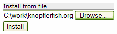

Image 2: Result after starting a bundle

Image 3: Open a local file
Image 3: Open a local file
The Knopflerfish HTTP/HTML OSGi console is a small servlet that can be run on any OSGi platform with an installed HTTP server.
When started, the servlet registers at /servlet/console and allows access to the standard framework functions as bundle installation (both from URLs and using browser file upload), start, stop, update and uninstall. Additionally, detail info on a bundle such as state, manifest and services can be displayed.
Optionally, the HTTP console can request a login/pwd before enabling access. See configuration for details.
The HTTP console has been tested on Knopflerfish, Eclipse 3.0 and Oscar. It also runs well on Pocket PC (tested using KF on the IBM J9 VM).
The main screen lists all installed bundles. One or more bundles can be selected by marking the checkbox on the left. After selecting bundles, the operations available as toolbar icons can be performed.
A pre-compiled bundle jar can be found at http://www.knopflerfish.org/repo/jars/httpconsole/httpconsole-1.0.0.jar, as well in the KF bundle repository
Source is available via KF subversion
The toolbar display a set of command icons. When an icon is selected, the command will be performed. Any command result or errors will be displayed to the right of the bundle list.
| Reload page | |
| Ask for a local bundle file, upload the file and install the bundle | |
| Ask for a bundle URL and install this bundle | |
 |
Start selected bundles |
 |
Stop selected bundles |
 |
Update selected bundles |
 |
Uninstall selected bundles |
| Info about selected bundles. If no bundle is selected, show framework info | |
 |
Show help page |
Each bundle is displayed using an icon, the bundle's name and the bundle description. If a bundle's icon is clicked, the bundle is selected, and the bundle info page is displayed.
 | Bundle with activator |
 | Started bundle with activator |
 | Bundle without activator |
| Started bundle without activator |
The HTTP console can be configured using system properties: